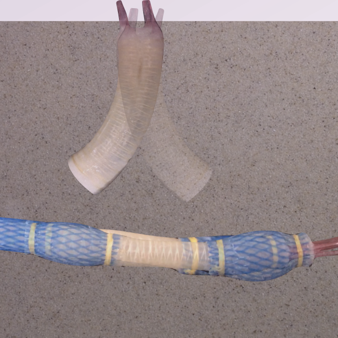
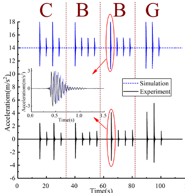

Research Overview

Self-burrowing Mechanism
Self-burrowing Robotics

EAGER SitS: Active Self-Boring Robots that Enable Next Generation Dynamic Underground Wireless Sensing Networks: Fusion of Fast Prototyping, Modeling and Learning (NSF #1841574, in collaboration with Daniel Aukes and Hamid Marvi)
Bio-inspired Underground Communication

CBBG core project: The goal of this research is to develop an innovative wireless underground communication technology inspired by subterranean mammals. (NSF #1449501)
Bio-inspired Scour Countermeasures

CBBG core project: the goal of this research is to investigate the potential use of the mangrove as a role model to develop new methods for scour protection surrounding submerged foundation systems. (NSF #1449501)
Finished projects

Before I secured funding for my passion in Bio-inspired Geotechnics, I had the opportunities to work on a few projects supported by the NSF, University of Akron and Ohio Department of Transportation.
- PI, “Stabilization of Peat Deposits for Roadway Construction and Remediation”, (Co-PI: Dr. Robert Y. Liang) The Ohio Department of Transportation and Federal Highway Administration, December 2014-May 2015
- PI, “Performance Comparison of Abutment and Retaining Wall Drainage Systems”, (Co-PI: Dr. Robert Y. Liang), The Ohio Department of Transportation and Federal Highway Administration, October 2014-December 2017
- PI, “Evaluation of Post Flooding Shoulder Reconditioning”, The Ohio Department of Transportation and Federal Highway Administration: September 2016-March 2017
- PI, “Use of Crushed Recycled Glass in the Construction of Local Roadways”, The Ohio Department of Transportation and Federal Highway Administration, October 2016-October 2018
- Co-PI, “Evaluation of Effective Bridge Deck Repair Maintenance Methods” (PI: Qindan Huang), The Ohio Department of Transportation and Federal Highway Administration, August 2017-August 2018
- Co-PI, “Roadway Kinetic Energy Capture and Conversion” (PI, Savas Kaya; Co-PIs: Junliang Tao, Munir Nazzal, Yilmaz Sozer and Ala R. Abbas), The Ohio Department of Transportation and Federal Highway Administration, August 2018-Feburary 2019
- PI, “Microbial Induced Calcite Precipitation as Erosion and Bridge Scour Countermeasure”, Summer Faculty Fellowship, University of Akron, July 1st 2016-July 1st 2017
- PI, “Bio-inspired Piezo-electrochromic Full-field Strain Sensing by Multilayered Nanocomposites”, Biomimicry Research and Innovation Center Initiative (BRIC) Research Incentive Grant (co-PI: Jack Zhu and Gunjin Yun), University of Akron, June 1st-December 31st 2014